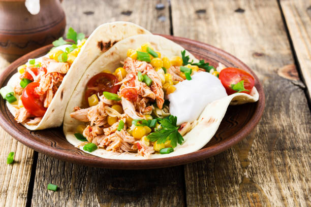

Chicken Tacos

Chicken Tacos
These savory chicken tacos are quick and easy.
Ingredients
- 2-3 small chicken breasts.
- Cilantro
- Olive Oil
- Kosher Salt
- Cracked Black Pepper
- Fresh Lime
- White or Brown Rice
- Bell Peppers
- Shredded Cheese
Cooking Steps
- Cube each chicken breast into bite-sized pieces.
- Season chicken to your liking with Kosher salt and cracked black pepper.
- Boil water in a small pot and add rice - cook rice for 15min.
- Add olive oil to a medium pan and cook on medium heat until chicken is golden brown on the outside and cooked thoroughly.
- Shred cilantro and remove from its stalk - wash thoroughly after.
- Cut bell peppers into strips and wash thoroughly when finished.
- Put all ingredients into a tortilla, garnish with shredded cheese, and squeeze a fresh lime wedge on top.
- Enjoy!